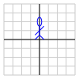
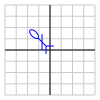

Matrix transformations, which we explored in the last section, allow us to describe certain functions \(T:\real^n\to\real^m\text{.}\) In this section, we will demonstrate how matrix transformations provide a convenient way to describe geometric operations, such as rotations, reflections, and scalings. We will then explore how matrix transformations are used in computer animation.
Preview Activity2.6.1.
We will describe the matrix transformation \(T\) that reflects 2-dimensional vectors across the horizontal axis. For instance, Figure 2.6.1 illustrates how a vector \(\xvec\) is reflected onto the vector \(T(\xvec)\text{.}\)
Figure2.6.1.A vector \(\xvec\) and its reflection \(T(\xvec)\) across the horizontal axis.
If \(\xvec = \twovec{2}{4}\text{,}\) what is the vector \(T(\xvec)\text{?}\) Sketch the vectors \(\xvec\) and \(T(\xvec)\text{.}\)
More generally, if \(\xvec=\twovec{x}{y}\text{,}\) what is \(T(\xvec)\text{?}\)
Find the vectors \(T\left(\twovec{1}{0}\right)\) and \(T\left(\twovec{0}{1}\right)\text{.}\)
Use your results to write the matrix \(A\) so that \(T(\xvec) = A\xvec\text{.}\) Then verify that \(T\left(\twovec{x}{y}\right)\) agrees with what you found in part b.
Describe the transformation that results from composing \(T\) with itself; that is, what is the transformation \(T\circ T\text{?}\) Explain how matrix multiplication can be used to justify your response.
Subsection2.6.1The geometry of \(2\times2\) matrix transformations
We have now seen how a few geometric operations, such as rotations and reflections, can be described using matrix transformations. The following activity shows, more generally, that matrix transformations can perform a variety of important geometric operations.
Activity2.6.2.Using matrix transformations to describe geometric operations.
The diagram below demonstrates the effect of a matrix transformation \(T\) on the plane. You may modify the matrix \(A=\begin{bmatrix} a \amp b \\ c \amp c
\\ \end{bmatrix}\) defining \(T\) through the sliders at the top.
Since a matrix transformation takes a vector as input and produces a vector as output, we will show the inputs and outputs on separate sets of axes. In particular, the axes on the left represent the inputs while the axes on the right illustrate how input features are transformed by \(T\text{.}\)
Figure2.6.2.The matrix transformation \(T\) transforms features shown on the left into features shown on the right.
For the following \(2\times2\) matrices \(A\text{,}\) use the diagram to study the effect of the corresponding matrix transformation \(T(\xvec) =
A\xvec\text{.}\) For each transformation, describe the geometric effect the transformation has on the plane.
The previous activity presented some examples showing that matrix transformations can perform interesting geometric operations, such as rotations, scalings, and reflections. Before we go any further, we should explain why it is possible to represent these operations by matrix transformations. In fact, we ask more generally: what types of functions \(T:\real^n\to\real^m\) are represented as matrix transformations?
The linearity of matrix-vector multiplication provides the key to answering this question. Remember that if \(A\) is a matrix, \(\vvec\) and \(\wvec\) vectors, and \(c\) a scalar, then
It turns out that, if \(T:\real^n\to\real^m\) satisfies these two linearity properties, then we can find a matrix \(A\) such that \(T(\xvec) = A\xvec\text{.}\) In fact, Proposition 2.5.6 tells us how to form \(A\text{;}\) we simply write
Said simply, this proposition means says that if have a function \(T:\real^n\to\real^m\) and can verify the two linearity properties stated in the proposition, then we know that \(T\) is a matrix transformation. Let’s see how this works in practice.
Example2.6.4.
We will consider the function \(T:\real^2\to\real^2\) that rotates a vector \(\xvec\) by \(45^\circ\) in the counterclockwise direction to obtain \(T(\xvec)\) as seen in Figure 2.6.5.
Figure2.6.5.The function \(T\) rotates a vector counterclockwise by \(45^\circ\text{.}\)
We first need to know that \(T\) can be represented by a matrix transformation, which means, by Proposition 2.6.3, that we need to verify the linearity properties:
The next two figures illustrate why these properties hold. For instance, Figure 2.6.6 shows the relationship between \(T(\vvec)\) and \(T(c\vvec)\) when \(c\) is a scalar. In particular, scaling a vector and then rotating it is the same as rotating and then scaling it, which means that \(T(c\vvec)
= cT(\vvec)\text{.}\)
Figure2.6.6.We see that the vector \(T(c\vvec)\) is a scalar multiple to \(T(\vvec)\) so that \(T(c\vvec) =
cT(\vvec)\text{.}\)
Similarly, Figure 2.6.7 shows the relationship between \(T(\vvec+\wvec)\text{,}\)\(T(\vvec)\text{,}\) and \(T(\wvec)\text{.}\) Remember that the sum of two vectors is represented by the diagonal of the parallelogram defined by the two vectors. The rotation \(T\) has the effect of rotating the parallelogram defined by \(\vvec\) and \(\wvec\) into the parallelogram defined by \(T(\vvec)\) and \(T(\wvec)\text{,}\) explaining why \(T(\vvec+\wvec) = T(\vvec) + T(\wvec)\text{.}\)
Figure2.6.7.We see that the vector \(T(\vvec+\wvec)\) is the sum of \(T(\vvec)\) and \(T(\wvec)\) so that \(T(\vvec + \wvec) = T(\vvec) + T(\wvec)\text{.}\)
Having verified these two properties, we now know that the function \(T\) that rotates vectors by \(45^\circ\) is a matrix transformation. We may therefore write it as \(T(\xvec) = A\xvec\) where \(A\) is the \(2\times2\) matrix \(A=\left[\begin{array}{rr} T(\evec_1) \amp T(\evec_2)
\end{array}\right]\text{.}\) The columns of this matrix, \(T(\evec_1)\) and \(T(\evec_2)\text{,}\) are shown on the right of Figure 2.6.8.
Figure2.6.8.The matrix transformation \(T\) rotates \(\evec_1\) and \(\evec_2\) by \(45^\circ\text{.}\)
Notice that \(T(\evec_1)\) forms an isosceles right triangle, as shown in Figure 2.6.9. Since the length of \(\evec_1\) is 1, the length of \(T(\evec_1)\text{,}\) the hypotenuse of the triangle, is also 1, and by Pythagoras’ theorem, the lengths of its legs are \(1/\sqrt{2}\text{.}\)
Figure2.6.9.The vector \(T(\evec_1)\) has length 1 and is the hypotenuse of a right isosceles triangle.
This leads to \(T(\evec_1) = \twovec{\frac1{\sqrt{2}}}
{\frac1{\sqrt{2}}}\text{.}\) In the same way, we find that \(T(\evec_2) = \twovec{-\frac1{\sqrt{2}}}
{\frac1{\sqrt{2}}}\) so that the matrix \(A\) is
The same kind of thinking applies more generally to show that rotations, reflections, and scalings are matrix transformations. Similarly, we could revisit the functions in Activity 2.5.3 and verify that they are matrix transformations.
Activity2.6.3.
In this activity, we seek to describe various matrix transformations by finding the matrix that gives the desired transformation. All of the transformations that we study here have the form \(T:\real^2\to\real^2\text{.}\)
Find the matrix of the transformation that has no effect on vectors; that is, \(T(\xvec) = \xvec\text{.}\)
Find the matrix of the transformation that reflects vectors in \(\real^2\) across the line \(y=x\text{.}\)
What is the result of composing the reflection you found in the previous part with itself; that is, what is the effect of reflecting across the line \(y=x\) and then reflecting across this line again? Provide a geometric explanation for your result as well as an algebraic one obtained by multiplying matrices.
Find the matrix that rotates vectors counterclockwise in the plane by \(90^\circ\text{.}\)
Compare the result of rotating by \(90^\circ\) and then reflecting in the line \(y=x\) to the result of first reflecting in \(y=x\) and then rotating \(90^\circ\text{.}\)
Find the matrix that results from composing a \(90^\circ\) rotation with itself four times; that is, if \(T\) is the matrix transformation that rotates vectors by \(90^\circ\text{,}\) find the matrix for \(T\circ T\circ T \circ
T\text{.}\) Explain why your result makes sense geometrically.
Explain why the matrix that rotates vectors counterclockwise by an angle \(\theta\) is
Subsection2.6.2Matrix transformations and computer animation
Linear algebra plays a significant role in computer animation. We will now illustrate how matrix transformations and some of the ideas we have developed in this section are used by computer animators to create the illusion of motion in their characters.
Figure 2.6.10 shows a test character used by Pixar animators. On the left is the original definition of the character; on the right, we see that the character has been moved into a different pose. To make it appear that the character is moving, animators create a sequence of frames in which the character’s pose is modified slightly from one frame to the next often using matrix transformations.
Of course, realistic characters will be drawn in three-dimensions. To keep things a little more simple, however, we will look at this two-dimensional character and devise matrix transformations that move them into different poses.

Of course, the first thing we may wish to do is simply move them to a different position in the plane, such as that shown in Figure 2.6.11. Motions like this are called translations.
Figure2.6.11.Translating our character to a new position in the plane.
This presents a problem because a matrix transformation \(T:\real^2\to\real^2\) has the property that \(T(\zerovec) = A\zerovec = \zerovec\text{.}\) This means that a matrix transformation cannot move the origin of the coordinate plane. To address this restriction, animators use homogeneous coordinates, which are formed by placing the two-dimensional coordinate plane inside \(\real^3\) as the plane \(z=1\text{,}\) as shown in Figure 2.6.12.
Figure2.6.12.Include the two-dimensional coordinate plane in \(\real^3\) as the plane \(z=1\) so that we can translate the character.
As a result, rather than describing points in the plane as vectors \(\twovec{x}{y}\text{,}\) we describe them as three-dimensional vectors \(\threevec{x}{y}{1}\text{.}\) As we see in the next activity, this allows us to translate our character in the plane.
Activity2.6.4.
In this activity, we will use homogeneous coordinates and matrix transformations to move our character into a variety of poses.
Since we regard our character as living in \(\real^3\text{,}\) we will consider matrix transformations defined by matrices
\begin{equation*}
\left[\begin{array}{rrr}
a \amp b \amp c \\
d \amp e \amp f \\
0 \amp 0 \amp 1 \\
\end{array}\right]\text{.}
\end{equation*}
Verify that such a matrix transformation transforms points in the plane \(z=1\) into points in the same plane; that is, verify that
\begin{equation*}
\left[\begin{array}{rrr}
a \amp b \amp c \\
d \amp e \amp f \\
0 \amp 0 \amp 1 \\
\end{array}\right]
\threevec{x}{y}{1} = \threevec{x'}{y'}{1}\text{.}
\end{equation*}
Express the coordinates of the resulting point \(x'\) and \(y'\) in terms of the coordinates of the original point \(x\) and \(y\text{.}\)
The diagram below allows you to choose parameters \(a, b, \ldots, f\) to define the matrix associated to the matrix \(\begin{bmatrix}
a \amp b \amp c \\
d \amp e \amp f \\
0 \amp 0 \amp 1 \\
\end{bmatrix}\text{.}\) The transformation’s effect on our character is shown on the right.
Figure2.6.13.An interactive diagram that allows us to move the character using homogeneous coordinates.
Find the matrix transformation that translates our character to a new position in the plane, as shown in Figure 2.6.14
Figure2.6.14.Translating to a new position.
As originally drawn, our character is waving with one of their hands. In one of the movie’s scenes, we would like them to wave with their other hand, as shown in Figure 2.6.15. Find the matrix transformation that moves them into this pose.
Figure2.6.15.Waving with the other hand.
Later, our character performs a cartwheel by moving through the sequence of poses shown in Figure 2.6.16. Find the matrix transformations that create these poses.

Figure2.6.16.Performing a cartwheel.
Next, we would like to find the transformations that zoom in on our character’s face, as shown in Figure 2.6.17. To do this, you should think about composing matrix transformations. This can be accomplished in the diagram by using the Compose button, which makes the current pose, displayed on the right, the new beginning pose, displayed on the left. What is the matrix transformation that moves the character from the original pose, shown in the upper left, to the final pose, shown in the lower right?
Figure2.6.17.Zooming in on our characters’ face.
We would also like to create our character’s shadow, shown in the sequence of poses in Figure 2.6.18. Find the sequence of matrix transformations that achieves this. In particular, find the matrix transformation that takes our character from their original pose to their shadow in the lower right.
Figure2.6.18.Casting a shadow.
Write a final scene to the movie and describe how to construct a sequence of matrix transformations that create your scene.
Subsection2.6.3Summary
This section explored how geometric operations are performed by matrix transformations.
A function \(T:\real^n\to\real^m\) is a matrix transformation if and only if these properties are satisfied:
Geometric operations, such as rotations, reflections, and scalings, can be represented as matrix transformations.
Composing geometric operations corresponds to matrix multiplication.
Computer animators use homogeneous coordinates and matrix transformations to create the illusion of motion.
Exercises2.6.4Exercises
1.
For each of the following geometric operations in the plane, find a \(2\times 2\) matrix that defines the matrix transformation performing the operation.
Rotates vectors by \(180^\circ\text{.}\)
Reflects vectors across the vertical axis.
Reflects vectors across the line \(y=-x\text{.}\)
Rotates vectors counterclockwise by \(60^\circ\text{.}\)
First rotates vectors counterclockwise by \(60^\circ\) and then reflects in the line \(y=x\text{.}\)
2.
This exercise investigates the composition of reflections in the plane.
Find the result of first reflecting across the line \(y=0\) and then \(y=x\text{.}\) What familiar operation is the cumulative effect of this composition?
What happens if you compose the operations in the opposite order; that is, what happens if you first reflect across \(y=x\) and then \(y=0\text{?}\) What familiar operation results?
What familiar geometric operation results if you first reflect across the line \(y=x\) and then \(y=-x\text{?}\)
What familiar geometric operation results if you first rotate by \(90^\circ\) and then reflect across the line \(y=x\text{?}\)
It is a general fact that the composition of two reflections results in a rotation through twice the angle from the first line of reflection to the second. We will investigate this more generally in Exercise 2.6.4.8
3.
Shown below in Figure 2.6.19 are the vectors \(\evec_1\text{,}\)\(\evec_2\text{,}\) and \(\evec_3\) in \(\real^3\text{.}\)
Figure2.6.19.The vectors \(\evec_1\text{,}\)\(\evec_2\text{,}\) and \(\evec_3\) in \(\real^3\text{.}\)
Imagine that the thumb of your right hand points in the direction of \(\evec_1\text{.}\) A positive rotation about the \(x\) axis corresponds to a rotation in the direction in which your fingers point. Find the matrix definining the matrix transformation \(T\) that rotates vectors by \(90^\circ\) around the \(x\)-axis.
In the same way, find the matrix that rotates vectors by \(90^\circ\) around the \(y\)-axis.
Find the matrix that rotates vectors by \(90^\circ\) around the \(z\)-axis.
What is the cumulative effect of rotating by \(90^\circ\) about the \(x\)-axis, followed by a \(90^\circ\) rotation about the \(y\)-axis, followed by a \(-90^\circ\) rotation about the \(x\)-axis.
4.
If a matrix transformation performs a geometric operation, we would like to find a matrix transformation that undoes that operation.
Suppose that \(T:\real^2\to\real^2\) is the matrix transformation that rotates vectors by \(90^\circ\text{.}\) Find a matrix transformation \(S:\real^2\to\real^2\) that undoes the rotation; that is, \(S\) takes \(T(\xvec)\) back into \(\xvec\) so that \((S\circ T)(\xvec) = \xvec\text{.}\) Think geometrically about what the transformation \(S\) should be and then verify it algebraically.
We say that \(S\) is the inverse of \(T\) and we will write it as \(T^{-1}\text{.}\)
Verify algebraically that the reflection \(R:\real^2\to\real^2\) across the line \(y=x\) is its own inverse; that is, \(R^{-1} = R\text{.}\)
The matrix transformation \(T:\real^2\to\real^2\) defined by the matrix
performs a rotation through an angle \(\theta\) about the origin. Suppose instead that we would like to rotate by \(90^\circ\) about the point \((1,2)\text{.}\) Using homogeneous coordinates, we will develop a matrix that performs this operation.
Our strategy is to
begin with a vector whose tail is at the point \((1,2)\text{,}\)
translate the vector so that its tail is at the origin,
rotate by \(90^\circ\text{,}\) and
translate the vector so that its tail is back at \((1,2)\text{.}\)
Figure2.6.20.A sequence of matrix transformations that, when read right to left and top to bottom, rotate a vector about the point \((1,2)\text{.}\)
Remember that, when working with homogeneous coordinates, we consider matrices of the form
\begin{equation*}
\left[\begin{array}{rrr}
a \amp b \amp c \\
d \amp e \amp f \\
0 \amp 0 \amp 1 \\
\end{array}\right]\text{.}
\end{equation*}
The first operation is a translation by \((-1,-2)\text{.}\) Find the matrix that performs this translation.
The second operation is a \(90^\circ\) rotation about the origin. Find the matrix that performs this rotation.
The third operation is a translation by \((1,2)\text{.}\) Find the matrix that performs this translation.
Use these matrices to find the matrix that performs a \(90^\circ\) rotation about \((1,2)\text{.}\)
Use your matrix to determine where the point \((-10,
5)\) ends up if rotated by \(90^\circ\) about the \((1,2)\text{.}\)
6.
Consider the matrix transformation \(T:\real^2\to\real^2\) that assigns to a vector \(\xvec\) the closest vector on horizontal axis as illustrated in Figure 2.6.21. This transformation is called the projection onto the horizontal axis. You may imagine \(T(\xvec)\) as the shadow cast by \(\xvec\) from a flashlight far up on the positive \(y\)-axis.
Figure2.6.21.Projection onto the \(x\)-axis.
Find the matrix that defines this matrix transformation \(T\text{.}\)
Find the matrix that defines projection on the vertical axis.
What is the result of composing the projection onto the horizontal axis with the projection onto the vertical axis?
Find the matrix that defines projection onto the line \(y=x\text{.}\)
7.
This exericse concerns the matrix transformations defined by matrices of the form
\begin{equation*}
A = \left[\begin{array}{rr}
a \amp -b \\
b \amp a \\
\end{array}\right]\text{.}
\end{equation*}
Let’s begin by looking at two special types of these matrices.
First, consider the matrix where \(a = 2\) and \(b=0\) so that
What is the geometric effect of \(A\) on vectors in the plane?
In general, the composition of matrix transformation depends on the order in which we compose them. For these transformations, however, it is not the case. Check this by verifying that
\begin{equation*}
\left[\begin{array}{rr}
a \amp -b \\
b \amp a \\
\end{array}\right]
=
\left[\begin{array}{rr}
r \amp 0 \\
0 \amp r \\
\end{array}\right]
\left[\begin{array}{rr}
\cos\theta \amp -\sin\theta \\
\sin\theta \amp \cos\theta \\
\end{array}\right]\text{.}
\end{equation*}
Using this description, describe the geometric effect on vectors in the plane of the matrix transformation defined by
\begin{equation*}
A= \left[\begin{array}{rr}
a \amp -b \\
b \amp a \\
\end{array}\right]\text{.}
\end{equation*}
Suppose we have a matrix transformation \(T\) defined by a matrix \(A\) and another transformation \(S\) defined by \(B\) where
\begin{equation*}
A= \left[\begin{array}{rr}
a \amp -b \\
b \amp a \\
\end{array}\right],~~~
B= \left[\begin{array}{rr}
c \amp -d \\
d \amp c \\
\end{array}\right]\text{.}
\end{equation*}
Describe the geometric effect of the composition \(S\circ
T\) in terms of the \(a\text{,}\)\(b\text{,}\)\(c\text{,}\) and \(d\text{.}\)
The matrices of this form give a model for the complex numbers and will play an important role in Section 4.4.
8.
We saw earlier that the rotation in the plane through an angle \(\theta\) is given by the matrix:
We would like to find a similar expression for the matrix that represents the reflection across \(L_\theta\text{,}\) the line passing through the origin and making an angle of \(\theta\) with the positive \(x\)-axis, as shown in Figure 2.6.23.
Figure2.6.23.The reflection across the line \(L_\theta\text{.}\)
To do this, notice that this reflection can be obtained by composing three separate transformations as shown in Figure 2.6.24. Beginning with the vector \(\xvec\text{,}\) we apply the transformation \(R\) to rotate by \(-\theta\) and obtain \(R(\xvec)\text{.}\) Next, we apply \(S\text{,}\) a reflection in the horizontal axis, followed by \(T\text{,}\) a rotation by \(\theta\text{.}\) We see that \(T(S(R(\xvec)))\) is the same as the reflection of \(\xvec\) in the original line \(L_\theta\text{.}\)
Figure2.6.24.Reflection in the line \(L_\theta\) as a composition of three transformations.
Using this decomposition, show that the reflection in the line \(L_\theta\) is described by the matrix
Now that we have a matrix that describes the reflection in the line \(L_\theta\text{,}\) show that the composition of the reflection in the horizontal axis followed by the reflection in \(L_\theta\) is a counterclockwise rotation by an angle \(2\theta\text{.}\) We saw some examples of this earlier in Exercise 2.6.4.2.